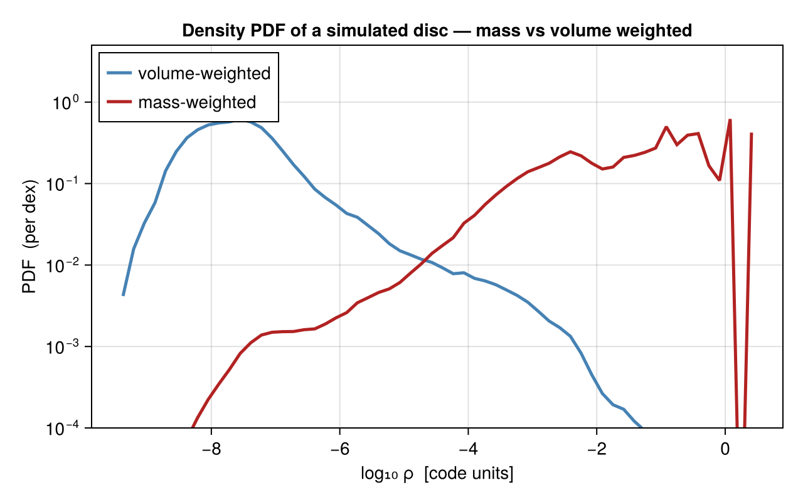

Statistics: PDFs
pdf computes the probability distribution function of any getvar quantity over the cells (or particles) of a snapshot. The canonical use is the density PDF — the log-normal core (with a power-law high-density tail) that supersonic turbulence and self-gravity imprint on the gas, and the starting point for many star-formation models.

using Mera
gas = gethydro(getinfo(100, "/data/Mera-Tests/spiral_clumps"))
P = pdf(gas, :rho) # mass-weighted density PDF
Pv = pdf(gas, :rho; weight=:volume) # volume-weighted
# plot, e.g.
# lines(log10.(P.centers), P.pdf)What it returns
pdf returns a NamedTuple (centers, edges, pdf, logbins, quantity, unit, weight):
centers/edges— bin centres / edges, in the quantity's units.pdf— a probability density on the binning axis. Withlogbins=true(the default) the axis islog10(quantity), sopdfis a density per dex; withlogbins=falseit is a density per unit. Either way it is normalised to unit area:sum(P.pdf .* diff(log10.(P.edges))) ≈ 1 # logbins sum(P.pdf .* diff(P.edges)) ≈ 1 # linear bins
Weighting
The weight decides what the PDF describes — and the two weightings tell different stories (as in the figure):
weight=:mass(default) — "how much mass is at each density"; peaks at high density.weight=:volume— "how much volume is at each density"; the volume-weighted density PDF is the one compared with turbulence theory (the log-normal).weight=:cells/:count— number-weighted (every cell counts equally).
Options
| keyword | default | meaning |
|---|---|---|
weight | :mass | :mass, :volume, or :cells/:count |
norm | :density | :density (area = 1), :probability (Σ = 1), :peak (max = 1), or :count/:none (raw weighted counts) |
logbins | true | log-spaced bins over log10(quantity) (quantity must be > 0) |
bins | 60 | number of bins |
valrange | data range | (min, max) of the quantity |
unit | :standard | unit of quantity |
mask | [false] | restrict to selected cells/particles |
The norm choices answer different questions: :density is the proper (bin-width-independent) PDF for comparing against theory or different binnings; :probability gives the mass/volume fraction in each bin; :peak compares shapes regardless of amplitude; :count keeps the raw weighted histogram.
It works on any quantity, not just density — e.g. pdf(gas, :T) (temperature), pdf(gas, :mach) (Mach number), pdf(gas, :p) (pressure). Combine with subregion or a mask to restrict to a region, and with timeseries to watch a PDF evolve.
Any data type — and projected 2D maps
pdf is generic over the data object, so it works on hydro, particle, gravity, and RT data — any quantity/weight getvar supports. For a signed field (the potential :epot, a velocity component) pass logbins=false, since log bins need positive values:
pdf(particles, :vx; weight=:mass, logbins=false) # particle velocity PDF
pdf(gravity, :epot; weight=:volume, logbins=false) # potential PDF
pdf(rt, :Np1; weight=:volume) # photon-density PDFPass a projection result and pdf takes the PDF of the 2D map's pixels — with :sd this is the column-density PDF (N-PDF), a standard observational diagnostic. Weight by :area (default, every pixel equal), :value, or another map key; a raw matrix works too:
p = projection(gas, :sd)
N = pdf(p, :sd) # area-weighted N-PDF
M = pdf(mock_observe(p, :sd; beam_fwhm=1.0, beam_unit=:kpc)) # PDF of a raw image matrixPlanned
Density/velocity power spectra and structure functions are planned as a follow-up; they need an FFT backend and will ship as a package extension (using FFTW), the same way savefits uses FITSIO. Many derived quantities are already available through getvar — e.g. :freefall_time, :jeanslength/:jeansmass, :virial_parameter_local, the sound speed :cs, and the Mach numbers :mach*.
See also
getvar— the quantities you can take a PDF of (and the derived timescales).profile— radial/quantity profiles (means in bins), the complementary view.timeseries— evolve a PDF across snapshots.